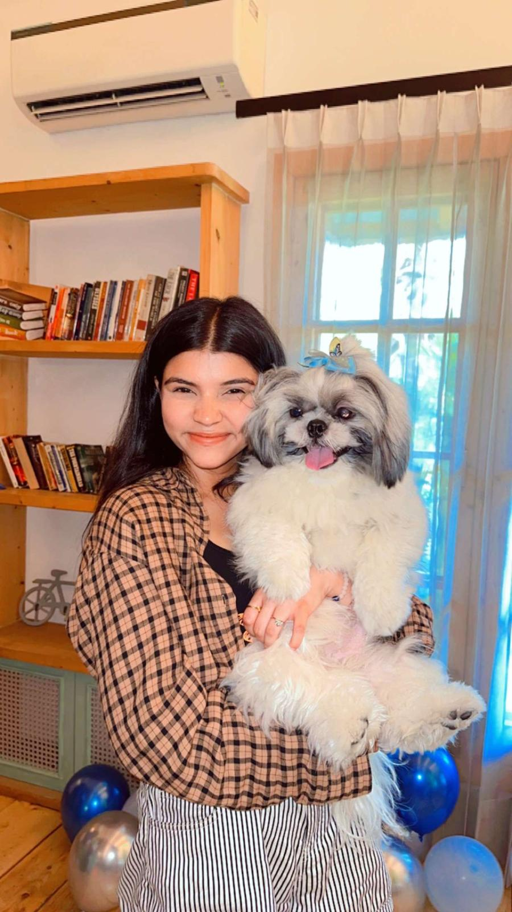

My name is Divishi Beri, I am nineteen years old, I am from India and i have recently moved to canda for my further studies, I graduated from highschool one year ago, I opted for information practices as one of subjects in 12thgrade as i'm intersted in learning new thinbgs related to computer, my hobbies includes creating diffrent types of arts, drawings, painting and swimming.
Why i opted for Interactive Media Design as my course
In past i have done a course related to web development and i found it very intersting which is the reason i took IMD as as my course, my expectations from this course will be to learn new skills and at the same time enhance my exisitng skills.
Walk through life as if you have something new to learn,and you will-Veron Howard]
My Hobbies
- Creating different types of Arts
- Traveling
- Swimming
- Painting